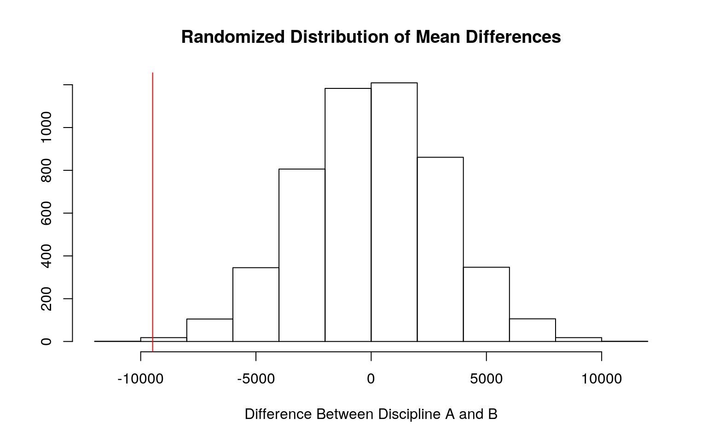

A knitted R Markdown document (preferably HTML) and the raw R Markdown file (as .Rmd) should both be submitted to Canvas by 11:59pm on the due date. These two documents will be graded jointly, so they must be consistent (i.e., don’t change the R Markdown file without also updating the knitted document). Knit an html copy too, for later! In the .Rmd file for Project 2, you can copy the first code-chunk into your project .Rmd file to get better formatting. Notice that you can adjust the opts_chunk$set(...) above to set certain parameters if necessary to make the knitting cleaner (you can globally set the size of all plots, etc). You can copy the set-up chunk in Project2.Rmd: I have gone ahead and set a few for you (such as disabling warnings and package-loading messges when knitting)!
Like before, I envision your written text forming something of a narrative structure around your code/output. All results presented must have corresponding code. Any answers/results/plots etc. given without the corresponding R code that generated the result will not be graded. Furthermore, all code contained in our project document should work properly. Please do not include any extraneous code or code which produces error messages. (Code which produces warnings is fine as long as you understand what the warnings mean.)
Find one dataset with at least 5 variables (ideally more!) that you want to use to build models/test hypotheses. At least one should be categorical (with 2-5 groups, ideally; definitely fewer than 10) and at least two should be numeric (taking on more than 10 distinct values). Ideally, at least of your variables will be binary (if not, you will have to create one by discretizing a numeric or collapsing levels of a categorical). You will need a minimum of 40 observations (at least 10 observations for every explanatory variable you have, ideally 20+ observations/variable).
It is perfectly fine to use either dataset (or the merged dataset, or a subset of your variables) from Project 1. However, I might encourage you to diversify things a bit and choose a different dataset to work with (particularly if the variables did not reveal interesting associations in Project 1 that you want to follow up with). The only requirement/restriction is that you may not use data from any examples we have done in class or lab. It would be a good idea to pick more cohesive data this time around (i.e., variables that you actually thing might have a relationship you would want to test). Think more along the lines of your Biostats project.
Again, you can use data from anywhere you want (see bottom for resources)! If you want a quick way to see whether a built-in (R) dataset has binary and/or character (i.e., categorical) variables, check out this list: https://vincentarelbundock.github.io/Rdatasets/datasets.html.
library(carData)
head(Salaries)## rank discipline yrs.since.phd yrs.service sex salary
## 1 Prof B 19 18 Male 139750
## 2 Prof B 20 16 Male 173200
## 3 AsstProf B 4 3 Male 79750
## 4 Prof B 45 39 Male 115000
## 5 Prof B 40 41 Male 141500
## 6 AssocProf B 6 6 Male 97000*The dataset contains information about salaries of professors, asst professors, and assoc prof. It gives us details about their discipline, levels A (theoretical'' departments) or B (applied'' departments), sex, years since PhD, and years of service.
manova <- manova(cbind(yrs.since.phd,salary,yrs.service)~discipline,data=Salaries)
summary(manova)## Df Pillai approx F num Df den Df Pr(>F)
## discipline 1 0.13533 20.502 3 393 2.313e-12 ***
## Residuals 395
## ---
## Signif. codes: 0 '***' 0.001 '**' 0.01 '*' 0.05 '.' 0.1
' ' 1summary.aov(manova)## Response yrs.since.phd :
## Df Sum Sq Mean Sq F value Pr(>F)
## discipline 1 3128 3127.95 19.725 1.162e-05 ***
## Residuals 395 62638 158.58
## ---
## Signif. codes: 0 '***' 0.001 '**' 0.01 '*' 0.05 '.' 0.1
' ' 1
##
## Response salary :
## Df Sum Sq Mean Sq F value Pr(>F)
## discipline 1 8.8508e+09 8850802234 9.8634 0.001813 **
## Residuals 395 3.5445e+11 897341368
## ---
## Signif. codes: 0 '***' 0.001 '**' 0.01 '*' 0.05 '.' 0.1
' ' 1
##
## Response yrs.service :
## Df Sum Sq Mean Sq F value Pr(>F)
## discipline 1 1815 1814.83 11 0.0009957 ***
## Residuals 395 65171 164.99
## ---
## Signif. codes: 0 '***' 0.001 '**' 0.01 '*' 0.05 '.' 0.1
' ' 1pairwise.t.test(Salaries$yrs.since.phd, Salaries$discipline, p.adj="none")##
## Pairwise comparisons using t tests with pooled SD
##
## data: Salaries$yrs.since.phd and Salaries$discipline
##
## A
## B 1.2e-05
##
## P value adjustment method: nonepairwise.t.test(Salaries$yrs.service, Salaries$discipline, p.adj="none")##
## Pairwise comparisons using t tests with pooled SD
##
## data: Salaries$yrs.service and Salaries$discipline
##
## A
## B 0.001
##
## P value adjustment method: nonepairwise.t.test(Salaries$salary, Salaries$discipline, p.adj="none")##
## Pairwise comparisons using t tests with pooled SD
##
## data: Salaries$salary and Salaries$discipline
##
## A
## B 0.0018
##
## P value adjustment method: noneggplot(Salaries, aes(x = yrs.since.phd, y = salary)) +
geom_point(alpha = .5) + facet_wrap(~discipline)A MANOVA was run to get the effect of discipline level on 5 variables. Of those five variables, three were significant. Pairwise t-tests were run on salary, yrs.since.phd, and yrs.service and there was a significant difference. There were seven tests run, which means that the probability of a type I error is 0.35. Therefore, the (alpha) needs to be adjusted. this would be (alpha = 0.05/7 = 0.0071).
mean(Salaries[Salaries$discipline=="A",]$salary)-
mean(Salaries[Salaries$discipline=="B",]$salary)## [1] -9480.264#Randomization test
r_dist <- vector()
for(i in 1:5000){
new<-data.frame(salary=sample(Salaries$salary), discipline=Salaries$discipline)
r_dist[i]<-mean(new[new$discipline=="A",]$salary)- mean(new[new$discipline=="B",]$salary)}
#P-value
mean(r_dist>-9480.264)*2## [1] 1.9984{hist(r_dist, main="Randomized Distribution of Mean Differences", ylab="",
xlab="Difference Between Discipline A and B");
abline(v=-9480.264, col="red")} The randomization test produced a p-value of 1.9976. This p-value tells us that there is not a significant difference in the salary between discipline A and discipline B.
3. (35 pts) Build a linear regression model predicting one of your response variables from at least 2 other variables, including their interaction. Mean-center any numeric variables involved in the interaction.
ggplot() using geom_smooth(method="lm"). If your interaction is numeric by numeric, refer to code in the slides to make the plot or check out the interactions package, which makes this easier. If you have 3 or more predictors, just chose two of them to plot for convenience. (8)coeftest(..., vcov=vcovHC(...)). Discuss significance of results, including any changes from before/after robust SEs if applicable. (8)Salaries$salary_c <- Salaries$salary-mean(Salaries$salary)
Salaries$yrs.since.phd_c <- Salaries$yrs.since.phd-mean(Salaries$salary)
part3 <- lm(salary_c ~ yrs.since.phd_c*discipline, data=Salaries)
summary(part3)##
## Call:
## lm(formula = salary_c ~ yrs.since.phd_c * discipline,
data = Salaries)
##
## Residuals:
## Min 1Q Median 3Q Max
## -84580 -16974 -3620 15733 92072
##
## Coefficients:
## Estimate Std. Error t value Pr(>|t|)
## (Intercept) 1.062e+08 1.706e+07 6.224 1.24e-09 ***
## yrs.since.phd_c 9.339e+02 1.500e+02 6.225 1.24e-09 ***
## disciplineB 4.155e+07 2.399e+07 1.732 0.0841 .
## yrs.since.phd_c:disciplineB 3.653e+02 2.110e+02 1.731
0.0842 .
## ---
## Signif. codes: 0 '***' 0.001 '**' 0.01 '*' 0.05 '.' 0.1
' ' 1
##
## Residual standard error: 26400 on 393 degrees of freedom
## Multiple R-squared: 0.2458, Adjusted R-squared: 0.2401
## F-statistic: 42.7 on 3 and 393 DF, p-value: < 2.2e-16Salaries$discipline<-factor(Salaries$discipline,levels=c("A","B"),labels=c("A","B"))
ggplot(Salaries, aes(x=yrs.since.phd, y=salary))+geom_point(aes(color=discipline))+
geom_smooth(method="lm", se=F, fullrange=T, aes(color=discipline))+
xlab("Yrs since phd")+ylab("Salary")+theme_classic()resids<-part3$residuals
#Tests for normality
shapiro.test(resids)##
## Shapiro-Wilk normality test
##
## data: resids
## W = 0.97744, p-value = 7.52e-06library(lmtest)
bptest(part3)##
## studentized Breusch-Pagan test
##
## data: part3
## BP = 54.095, df = 3, p-value = 1.071e-11library(sandwich)
coeftest(part3, vcov = vcovHC(part3))##
## t test of coefficients:
##
## Estimate Std. Error t value Pr(>|t|)
## (Intercept) 1.0616e+08 2.0780e+07 5.1087 5.071e-07 ***
## yrs.since.phd_c 9.3388e+02 1.8278e+02 5.1092 5.057e-07
***
## disciplineB 4.1547e+07 2.7874e+07 1.4905 0.1369
## yrs.since.phd_c:disciplineB 3.6532e+02 2.4518e+02 1.4901
0.1370
## ---
## Signif. codes: 0 '***' 0.001 '**' 0.01 '*' 0.05 '.' 0.1
' ' 1summary(part3)$r.sq## [1] 0.2458286sample_dist<-replicate(5000, {
bootstrapped<-Salaries[sample(nrow(Salaries), replace=TRUE),]
part4<-lm(yrs.since.phd_c ~ salary_c*discipline, data=bootstrapped)
coef(part4)
})
sample_dist%>%t%>%as.data.frame%>%summarize_all(sd)## (Intercept) salary_c disciplineB salary_c:disciplineB
## 1 0.833592 2.889464e-05 1.089039 3.77372e-055. (25 pts) Fit a logistic regression model predicting a binary variable (if you don't have one, make/get one) from at least two explanatory variables (interaction not necessary).
part5<-glm(discipline~salary+yrs.since.phd+yrs.service, data=Salaries, family=binomial(link="logit"))
exp(coeftest(part5))##
## z test of coefficients:
##
## Estimate Std. Error z value Pr(>|z|)
## (Intercept) 0.33199 1.55035 0.0809 1.012
## salary 1.00002 1.00000 246.0244 1.000
## yrs.since.phd 0.89817 1.02241 0.0079 1.000
## yrs.service 1.04916 1.02064 10.4734 1.019Salaries$prob<-predict(part5,type="response")
Salaries$pred<-ifelse(Salaries$prob>0.5,"A","B")
#Confusion Matrix
table(prediction=as.numeric(Salaries$prob>.5),truth=Salaries$discipline)## truth
## prediction A B
## 0 90 51
## 1 91 165#Accuracy
(90+165)/397## [1] 0.6423174#Sensitivity
165/216## [1] 0.7638889#Specificity
90/181## [1] 0.4972376#Recall
165/256## [1] 0.6445312Salaries$logpred<-predict(part5, type="link")
Salaries%>%ggplot()+geom_density(aes(logpred,color=discipline,fill=discipline), alpha=.4)+
theme(legend.position=c(.85,.85))+geom_vline(xintercept=0)+ggtitle("Density Plot of predicted A vs. B")+xlab("predictor (logit)")6. (25 pts) Perform a logistic regression predicting the same binary response variable from ALL of the rest of your variables (the more, the better!)
lambda.1se). Discuss which variables are retained. (5)class_diagnostic <-function(probs,truth){
tab<-table(factor(probs>.5,levels=c("FALSE","TRUE")),truth)
acc=sum(diag(tab))/sum(tab)
sens=tab[2,2]/colSums(tab)[2]
spec=tab[1,1]/colSums(tab)[1]
ppv=tab[2,2]/rowSums(tab)[2]
if(is.numeric(truth)==FALSE & is.logical(truth)==FALSE) truth<-as.numeric(truth)-1
ord<-order(probs, decreasing=TRUE)
probs <- probs[ord]; truth <- truth[ord]
TPR=cumsum(truth)/max(1,sum(truth))
FPR=cumsum(!truth)/max(1,sum(!truth))
dup<-c(probs[-1]>=probs[-length(probs)], FALSE)
TPR<-c(0,TPR[!dup],1); FPR<-c(0,FPR[!dup],1)
n <- length(TPR)
auc<- sum( ((TPR[-1]+TPR[-n])/2) * (FPR[-1]-FPR[-n]) )
data.frame(acc,sens,spec,ppv,auc)
}
set.seed(307)
k=10
data1 <-Salaries[sample(nrow(Salaries)),]
folds<-cut(seq(1:nrow(Salaries)),breaks=k,labels=F)
diags<-NULL
for(i in 1:k){
train<-data1[folds!=i,]
test<-data1[folds==i,]
truth<-test$discipline
fit<-glm(discipline~salary+yrs.since.phd+yrs.service, data=train, family=binomial(link="logit"))
probs<-predict(fit,newdata = test,type="response")
diags<-rbind(diags,class_diagnostic(probs,truth))
}
apply(diags,2,mean)## acc sens spec ppv auc
## 0.6350000 0.7514795 0.4984348 0.6396610 0.7162046part6<-glm(discipline~yrs.since.phd+salary+yrs.service, data=Salaries, family=binomial(link="logit"))
coeftest(part6)##
## z test of coefficients:
##
## Estimate Std. Error z value Pr(>|z|)
## (Intercept) -1.1026e+00 4.3848e-01 -2.5147 0.01191 *
## yrs.since.phd -1.0739e-01 2.2160e-02 -4.8461 1.259e-06
***
## salary 2.4920e-05 4.5265e-06 5.5054 3.683e-08 ***
## yrs.service 4.7991e-02 2.0432e-02 2.3488 0.01883 *
## ---
## Signif. codes: 0 '***' 0.001 '**' 0.01 '*' 0.05 '.' 0.1
' ' 1set.seed(307)
k=10
data1<-Salaries[sample(nrow(Salaries)),]
folds<-cut(seq(1:nrow(Salaries)),breaks=k,labels=F)
diags<-NULL
for(i in 1:k){
train<-data1[folds!=i,]
test<-data1[folds==i,]
truth<-test$discipline
fit <-glm(discipline~yrs.since.phd+salary, data=train, family=binomial(link="logit"))
probs<-predict(fit,newdata = test,type="response")
diags<-rbind(diags,class_diagnostic(probs,truth))
}
apply(diags,2,mean)## acc sens spec ppv auc
## 0.6500641 0.7672335 0.5099723 0.6489912 0.7101082...